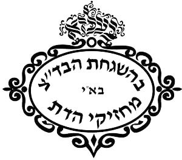
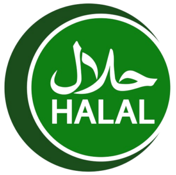
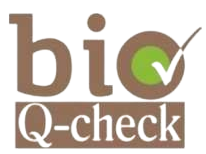
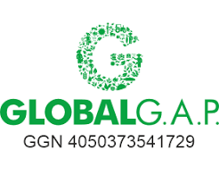
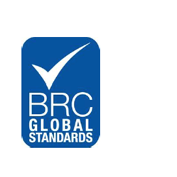

Home / Certificates
Certificates
We are proud to hold multiple accreditations from leading organizations

Kosher
Kosher
The Kosher Certified seal assures consumers that the product in question, with its ingredients and entire production cycle, adheres to all the requirements of the Kosher law.

Halal
HALAL
Halal certification attests that a product is manufactured in full compliance with the precepts of Islamic Law, containing no forbidden components and having had no contact with any substances considered impure.
ISO
ISO 9001
The international standard that specifies requirements for a quality management system (QMS). It demonstrates the ability to consistently provide products and services that meet customer and regulatory requirements.
ISO
ISO 22000
ISO 22000 helps organizations identify and control food safety hazards. Applicable to all types of producer, it provides reassurance within the global food supply chain, helping products cross borders and earning consumer trust.
FDA
FDA
FDA export certification provides official attestation concerning a product's regulatory or marketing status, based on available information at the time FDA issues the certificate.
SMETA
SMETA
SMETA (Sedex Members Ethical Trade Audit) is a social auditing standard businesses use to assess a supplier's working conditions across labor, health and safety, environment and business ethics.

Bio
Bio Q-Check
Q-Check is an independent, accredited certification body by the Hellenic Accreditation System (ESYD), providing evaluation, inspection and certification for Organic Farming and GLOBALG.A.P standards.

Global G.A.P
GLOBAL G.A.P
An internationally recognised certified standard ensuring Good Agricultural Practices, acting as a safeguard for food safety, workers' health and safety, animal welfare, and environmental protection.

BRC
BRC Global Standards
Brand Reputation through Compliance (BRC) is a UK trade organization recognized globally. It established its first Global Standard for Food Safety in 1998 to help companies comply with UK and EU food safety legislation.
Are you looking for a close and committed partner?
Contact us today and let's grow together.
Contact Us